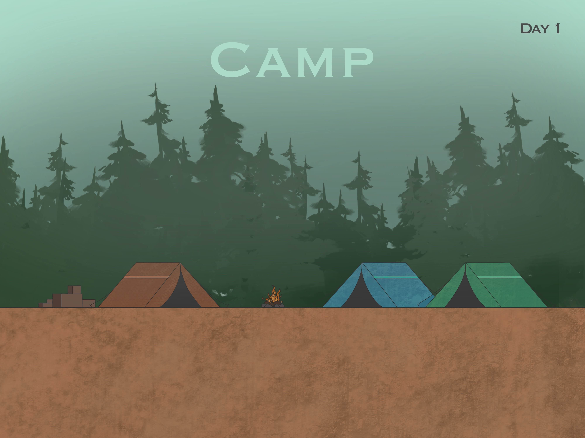
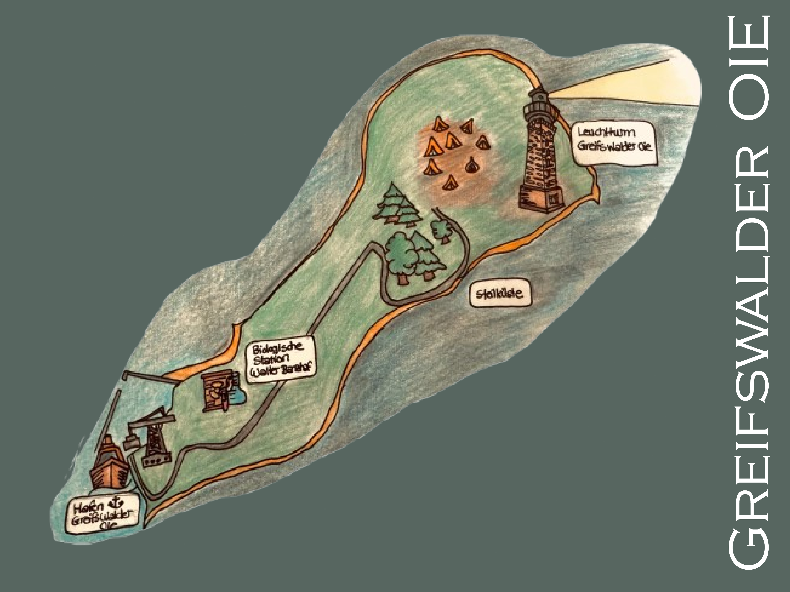
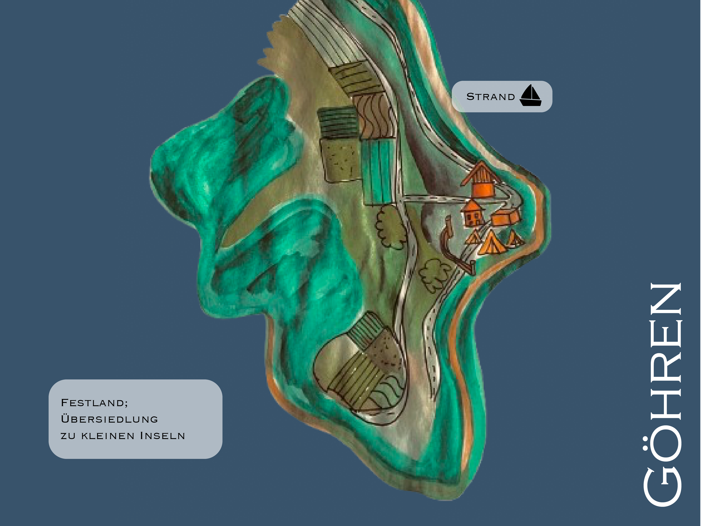
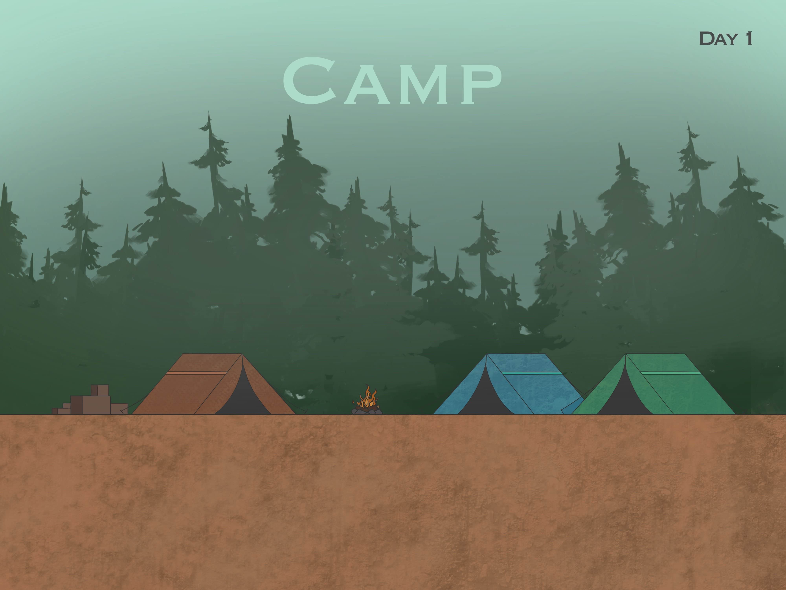
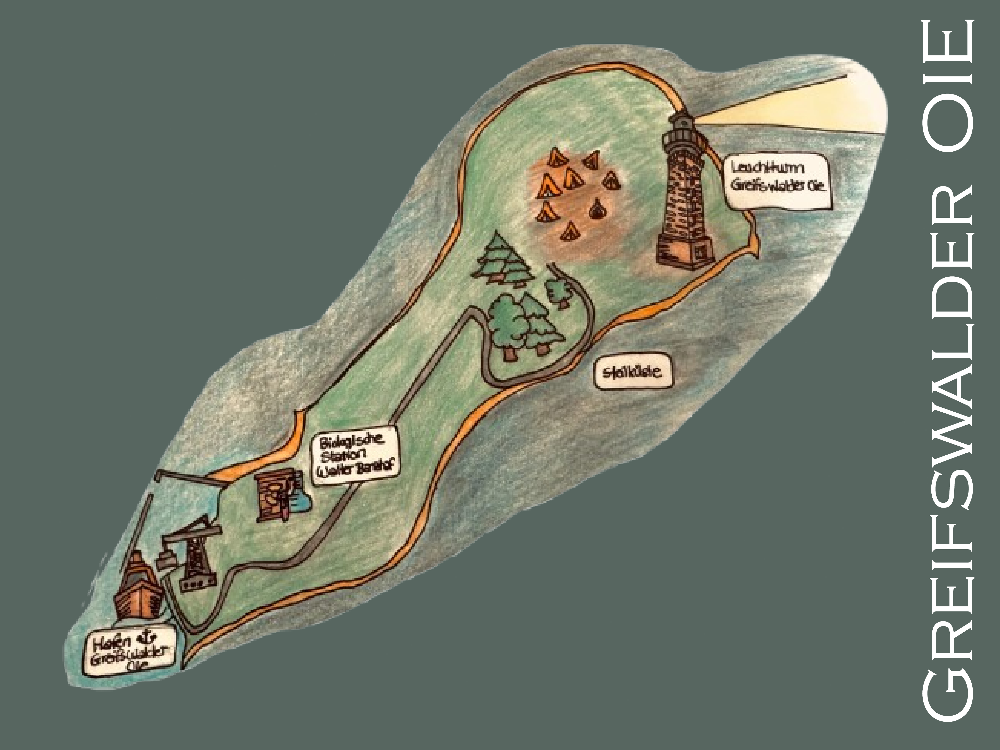
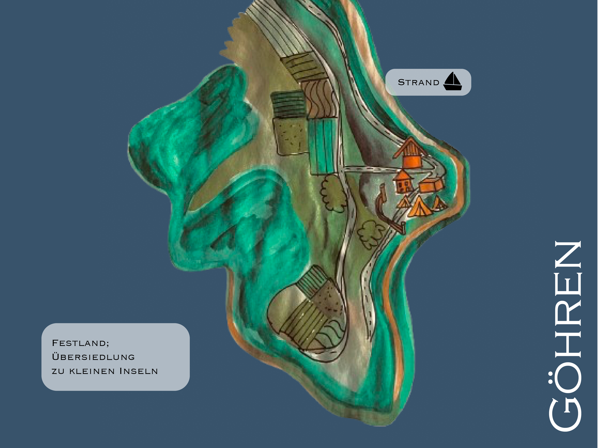

Camp – Startgebiet
Das Camp ist der Startpunkt des Spiels ...
Militärstützpunkt Dänholm
Ein verlassener Militärposten ...

Greifswalder Oie
Eine windige Insel mit Leuchtturm ...
Weitere Orte
Weitere Regionen wie Göhren ...
Wichtige Orte der Spielwelt
Das Camp ist der Startpunkt des Spiels ...
Ein verlassener Militärposten ...
Eine windige Insel mit Leuchtturm ...
Weitere Regionen wie Göhren ...
